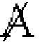

| 「メタ言語は存在しない」 | |
| 鈴木敏昭 | |
| soutaisya (2019) | |
本論文のねらいと位置づけはラカンの象徴界の理論、とりわけその中のメタ言語をめぐる問題を探究することである（表題もラカンの有名な言葉である）。つまりラカン理解のための１つのアプローチである。そこから筆者はラカンを中心として人格の統合的理論を構築したいと展望しているが、そのためにも人間における認知や言語の問題は自己論ともかかわってとても重要であり、本論で扱うメタ言語をめぐる問題はその要の１つになるであろう。そのために言語学でいうメタ言語論とラカンの問題とするメタ言語論の区別と関連を明らかにしつつ、ラカンの述べるように人間の象徴界の在り方がゲーデルの不完全性定理や集合論の見方とどう関連するのかを特に見てみたい。
記号は透明であるとする代表主義の見解では記号は記号により意味される事物を代表する。つまり記号は常に何かについての記号である(ﾚｶﾅﾃｨ,1982)。言語はシンボルとしての価値以外になんらの価値をも持っていない。すなわち人間はその物質的な現存を全く意識しないで、意味だけを意識する。こうして表象が言語に随伴するというよりも、言語を通って流れる。もし言語自体が対象として関心をひくと意味の伝達に障害をきたす。例えば、語の代わりに実物を提示したり、外国語の学習のときなどである(ﾗﾝｶﾞｰ,1981)。話したり聞いたりしているとき、我々の注意は音や話や構文にはなく、意味や意図におかれる。すなわち言語形式は透明である (Cazde,1976)。「シュヴァイッツァーはシュヴァイッツァーではない」(ｳｨﾄｹﾞﾝｼｭﾀｲﾝ,1981)と言う時、「シュヴァイッツァー」と言う語が意識されるなら、それは意味なしの記号として意識しなくてはならない。語の意味は通常の使用では意識に対して透明である。意味は体験に対して透明である。見ることを可能にするもの（文字通りに言うなら目や視神経など）は論理的に見えないのであり、また見えてはならないのである。なぜなら、見ることを可能にするものが見えるとするなら、さらにそれを可能にするものが要請され、無限後退に陥るからである(黒崎,1991)。
ウィトゲンシュタインの言語観は前期の意味の対象説から後期の意味の使用説へと変化したが、「意味」という語を用いる多くの場合、ある語(言葉)の意味とは言語[ゲーム]におけるその語(言葉)の使用であると説明される(ｳｨﾄｹﾞﾝｼｭﾀｲﾝ,1981)。使用規則は個々の具体的な使用において示されるのであって、使用規則というものをそれだけ単独に取り出すことはできない。ウィトゲンシュタインによれば、語の意味がわかるということはその語の使用能力の獲得であり、語のイメージや表象（表象体験）とは異なる(黒崎,1991)。つまり言語とは言語行為であり、システム（関係性）であって、単に指示対象との対応ではないということである。語が透明で対象を指示するとしても語が指し示すものは「生の現実」(こういうものが人間に想定可能だとして)ではない。すでにそれは知覚や概念というフィルターを通した「現実」である。そういう意味で言語は閉じた形式的体系であると言えるのではないか。後述する本論文の主題である「メタ言語は存在しない」という命題はこの点を問題にする。
なお心理学の中のメタ認知の分野で「メタ」言語意識あるいは言語の意識化ということが言われるが、そこで言う「メタ」言語意識とは言語形式を不透明にし、それらにそれ自体として注意を向ける能力である。それは特別な種類の言語遂行であり、話したり聞いたりする言語遂行よりもむずかしく特別の認知的要請を必要とする(Cazde,1976)。また以下で述べる「メタ言語」とは区別されるものであり、「メタ認知」という用語もあまり適切な使い方ではないように思う。
ヴァインリヒ(1984)によって以下、簡潔に学説史を見てみよう。「メタ」とはアリストテレスが使った「形而上学(Metaphysik)」すなわち物理学の「後にくる」科学を指す用語から来ている。それは個別科学が成立する条件でもあり、また思惟の思惟(noesis noeseos)である。中世のスコラ哲学では意識は単なる随伴意識(con-scientia)であり、神の意志(numen)につけ加えるものにすぎない。中世スコラ哲学の言語論（名辞説）では、語自身が意味行為の対象となる素材的な代表(suppositio materialis)と語が対象を表示する形式上の代表(suppositio formalis)の区別(シェアウッド)や名辞が表示的に代わりをするのではなく、話されたものや書かれたものの代用をする場合である素材的代用(オッカム)や事実に関する語彙の直接志向(intentio recta)と言語を表示する語彙の間接志向(intentio obliqua)の区別などがなされている。デカルトでは意識は自らの思惟(cogitatio)を自覚するところの考えるもの(res cogitans)としての人間の能力であり、そこからすべての対象意識は自己意識のなかに根拠づけられる。従って形而上学は物理学の「前に来る」（意識の優先）。ライプニッツには知覚(perception)と明覚(apperception)の区別がある。現代の論理学（フレーゲ、ラッセル、カルナップ、タルスキーら）では形式上の代表と素材的な代表を区別する。「どんな対象言語について話そうとするときにもメタ言語が必要」である（カルナップ）。
メタ言語と対象言語は本来はっきり区別できない。単なる対象志向だけの文は存在しない。つまり言語は本来的に透明だとは必ずしも言い切れない。メタ言語という概念は自然言語が本来、持っているものではない。自然言語でのメタ言語と対象言語には厳密な区別はない。それは言語学者、論理学者が作ったものである(ｳﾞｧｲﾝﾘﾋ,1984)。記号（代表する事物）は事物としても代表するものとしても考えられる。記号はもしこれを事物とみなせば、己れ自身に「精神の眼」を集中せしめ、文字通り凝視の対象になる（不透明化）(ﾚｶﾅﾃｨ,1982)。
コミュニケーション（言語ゲーム）で当事者間の言語能力の差が大きいほど、メタ言語的手段が多く用いらねばならない。差が小（日常生活）であれば、内在的メタ言語で十分であるが、差が大（科学）になると最大限の省察による明示的メタ言語が必要である(ｳﾞｧｲﾝﾘﾋ,1984)。
「代入原理」によれば、同じ指示項を持つ２表現は、その意義に関して異なっていても、互いに代置しうる。そして指示表現が使われる時、人は普通その意義に注意しない。もし２つの名が同じ指示項を持つにもかかわらず、互いに代置できないなら、発言中の名の出現は純粋に指示的ではなくなっている。つまり記号（名）は少々の注意を己れにひきとめている（不透明化）。従って透明・不透明は「文脈」によって生じる。不透明な文脈としては引用符の使用や命題にかかわる態度をあらわす発言などがあげられる。
１つの出現＝「型代(個物例)(token)」が自己の展示と事物の代表という２重の役割を兼任する。例えば、「『オーギュスト』様がみえられました」。この文では「オーギュスト」を指示しながら、話し手はそれに使用された語そのもののしかじかの徴候を強調している。また代入テストに失敗しても指示＝代表していることは有り得る。例えば、「ジョルジョーネはその背丈の故にそう称ばれた」。この文では語「ジョルジョーネ」の代わりに同じ対象を示す別の語を代入することはできない。しかしこの語はジョルジョーネを指してもいる。ガラスを通して風景を見るためにガラスはそれがあることを忘れさせるほど透明である必要がないのと同じで、語の透明性は相対的である。語の質料性、意義、指示項の区別と連関を見ることが必要である。時空的に規定された質料を備えた出現を考慮せずには、代表するもの＝指示項に接近できないのである(ﾚｶﾅﾃｨ,1982)。
文法的には統語論（形態素）はすべてメタ言語的資格を持つ。統語論的信号は注意の一部を事柄（対象）に向けないで、語を正しく理解するために用いるように読者をたちどまらせる。文法範疇に含まれている、隠れた省察構造として例えば、「問い」は自分の情報不足を語り手ははっきりさせ、コミュニケーション障害の原因を述べるものである。「否定」は相手の特定の期待や話し手自身の期待に対するストップサインである。「しかし」という接続詞は、一つの解釈からもう一つの解釈へ飛ぶことを読者にわからせるための継ぎ手の役目を果たす。「時制」は未来形は述べていることが不確実な仮定であることを示すし、現在形は述べていることがより確実なものとして理解すべきことを示す。またメタ言語としての言語記号には内在的メタ言語（形態素）と明示的メタ言語（語彙素）がある(ｳﾞｧｲﾝﾘﾋ,1984)。
レカナティによれば、ラッセルの記述理論は語る主体と文（語）との語用論的関係を無視している。だから文（語）自体に代表機能（透明性）が内属するかのようにみなす。
メタ命名としての言及の理論では（ア）ソクラテスは本を書かなかった、（イ）「ソクラテス」は５文字である、の二者において語ソクラテスと「ソクラテス」とは別個の２つの名であり、いずれも対象を指示するが、同一の対象ではないと考える。名「ソクラテス」（引用符つき）は個人ソクラテスではなく、その名、即ち引用符のないソクラテスという語を指示する。不透明理論とメタ命名理論の違いは不透明理論では名に対象を代表しない出現を認める。全部で二つの項（ｘ，ｙ）があり、（ア）ではｘは透明、（イ）では不透明であると見る。メタ命名理論では名はみな対象を指示すると考えるから、全部で３つの項ｘ，ｙ，ｚ（名の名）があり、（イ）ではｚがｘを指示すると見なす。しかし日常会話では引用符によって、話し手が語を何かを代表するのに使用するのではないこと、話し手は語について何かを語るのだということを信号する(Searle)。だから対象が現前しないときにはその固有名で指示するが、語そのものについて話すときにはその必要はない。その語を発音し喚起すればよい。引用符づきの話はその語そのものの展示・喚起に他ならない。例文（ア）と（イ）では同じ語が使われている（類的同一性）ので型(type)は同じであるが、語の演じる役割（個別的出現）が違うので、型代(個物例)(token)が違う。語の質料性と意義は指示項の面前で消失しないばかりか、それの仲立ちで指示項に接近できる。ここに発言行為の反射性（発言自体の自己展示）が見られる(ﾚｶﾅﾃｨ,1982)。
言語には２つの機能が区別される。認識機能（事実を代表し真偽の命題を提示）と非認識的機能（話し手の表出。道具・使用であって事実の代表ではない）である。後者はAustinのいう実演発語であり、事実を代表しない「無意義」発言である。例えば、「おめでとうございます」という発言は「私が君を祝福する」という事実を記述するのではない。このコトバを発すること自体が祝福すると言う事実を構成する。そこには実演発語の反射性と言われるものがある。「発言それ自体が構成する事実」を指示するという自己指示的性質（バンヴェニスト）がある。「私は歩く」と「私は誓う」の決定的違いである。ただし実演発語の顕在性にも程度の差がある。実演発言はどれも１人称を２、３人称に、動詞現在形を他の時制におきかえると確認発言に変わる。つまりすべての実現発語は直接法現在、能動態、１人称単数の動詞により導入される。しかし、必ずしもそうならないものがある。人称、態、法、時制は本質的要因でない。実演発語を文法基準で決めるのではなく、実演性を示す標識の明瞭度でゆるやかに区別すべき（オースティンの見解）であろう。原初的実演発語としては"猛犬"というように表だった自己指示的標識を含まないものである。表だった実演発語は"私は皆に、ここに猛犬がいることを警告する"というようなものである。実演動詞によって表だった実演性を示す。それは自己指示の反射的標識でもある(ﾚｶﾅﾃｨ,1982)。
実演発語の特色は①行為であることと②自己指示的である、つまり自己指示的指標（＝実演動詞）を含んでいることである。実演動詞によって明示されないが、行為遂行的な発言が原初的実演発語である。そこには深層構造において表層水準で略された実演動詞が存在するとも考えられる(Lakoff)。例えば、「君は何でも知っているが 、世界の終わりはいつ起こるのだろうか」という発言で、この副詞表現はどの動詞を修飾するのか。そこには「それで私は尋ねるのだが」という潜在的な実演動詞が隠されている。こうみると実演発語と事実確認的発語の境界は明瞭かという問題が起こる。実演性（反射性）と確認性（代表性）を同時に持つ発言がある。純粋に確認的と思われる発言でも実演性を持つ。例えば、「フレーゲは１９２５年に死んだ」は「フレーゲは１９２５年に死んだ（と私は言明する）」と区別がつかない。すなわちあらゆる確認的発言は「私は･･･と言明する」に言いかえられる。あらゆる発言は談話行為であると言える。あらゆる発言に発語的側面(locution)と発語内的側面(illocution)が区別され、この２側面はつねに結びつくのである（オーステｲンの第２理論）。
反射性は、代表作用によるのではなく、代表作用それ自体が示すものである。これはウｲトゲンシュタインにおける「示し」に対応する。（実演的）発言には根本的二重性（語り=本文=論理的含意と示し=余白=語用論的含意=言外の意味）がある。同様にあらゆる思考は暗黙裡に「私は考える」という思考に先立たれている(デカルト)。思考はすべて潜在的に己を反射するという２重構造を持っている。「私は地球が平だと言明する」という文は「私は『地球が平だ』と言明する」というのと同じではない。前者では発言全体が言明の行為とその対象とに同時にかかわる。これは発言における主要命題（語られるもの）と付帯命題（示されるもの）の混在とも言える。実演発語は（実演動詞によって表立った仕方にせよ、潜在的な仕方にせよ）、「余白」に発言行為の遂行を示す標識があるが、それは決して、その行為に関する言明ではない。我々は何かを言明するとき、つねに語られるものについて一定の態度を示す。態度を明示する場合でも、それは余白に属し、宣言の対象とはしない。語りと示しの区別は、構文論的には基礎づけられない(ﾚｶﾅﾃｨ,1982)。
発言は己の型代としての事実性を反射する。つまり発言行為そのものの意義を明らかにする。それは発言がどう解されるべきかを示し、その意味を補足する。そして聞き手は型文の意味と並んで、型代の発言行為の文脈を考慮しなければ、発言の命題内容を決められない。発言の実演性は型代反射性の一つの側面である。「これ」「私」「君」「今」「ここ」などは型代としての個別的な時空的出現において意味が特定化される。型代反射表現は己に反射することによって、それが生じた文脈を考慮させ、指示項を確定する。このように記号の２重性（事物性と意味性）は切り離せない。従って型代反射表現の不透明化は、その表現の透明化の不可欠の条件である。意図的コミュニケーションが存在するためには、意図的に疎通されるという事実が反射される必要がある(ﾚｶﾅﾃｨ,1982)。
言語伝達行動には６つの要因が含まれる。すなわち発信者、受信者、コンテクスト（関説物）、メッセージ、コンタクト、コードである。６つの要因に対して諸機能が区別される。①関説的(referential)、告示的(denotative)、認知的(cognitive)機能。メッセージの主要な機能であり、関説物をめざす姿勢を持ち、コンテクストへの方向づけをする。②心情的(emotive)、表現的(expressive)機能。発信者の態度の直接的表現であり、間投詞のように、あらゆる発話に心情的色彩が付与されている。③動能的(conative)機能。受信者への指向であり、呼格、命令法などによる。④交話的(phatic)機能。接触への指向であり、伝達を開始し、継続しようとする努力を示す。⑤メタ言語的(metalingual)機能。言語そのものについて語る言語であり、日常言語においてそれと気づかずに行使される。発話者と受信者が相手と同じコードを使っているかどうか確認する必要を感じるたびごとに、発話の焦点はコードそのものに合わせられる。どんな対象言語でも、それについて語るために、メタ言語が必要である（カルナップ）。子どもによる母国語習得はメタ言語的操作をひろく活用している。失語症はメタ言語能力の喪失として規定できることがしばしばある。⑥詩的(poetic)機能。メッセージそのものへの指向であり、言語芸術の支配的機能だが、他の言語活動でも副次的に働いている。例えば、類音法。"horrible harry"それは記号の触知性を高める。
第１に２種類の循環性（Ｍ→Ｍ,Ｃ→Ｃ）がある。
１つはメッセージがメッセージに関説する場合(Ｍ→Ｍ)。例えば、引用話法。「汝等...と言えることあるときけり」。もう１つはコードに関説するコードの場合(Ｃ→Ｃ)。例えば、固有名の一般的意味はコードに関説しなければ定義できない。英語のコードにおいては「Jerry」はその名を有する人物を名指す。第２に２種類の重なり合い（Ｍ→Ｃ,Ｃ→Ｍ）がある。１つはコードに関説するメッセージ(Ｍ→Ｃ)。例えば、自称的(autonymous)話法。"Pup"means a youngdog.もう１つはメセージに関説するコード(Ｃ→Ｍ)。例えば、転換子(shifter)。"Ｉ"とい人称代名詞において"Ｉ"という記号は慣習規則によって、それを言っている人を意味する。従って異なったコードにおいては別の記号があてがわれる。このように"Ｉ"は発話者と実存関係にある。そこでは所与のメッセージに必ず関説されなければならない(ﾔｰｺﾌﾞｿﾝ,1983)。
バフチーンは生活の言葉を問題にする。言葉は具体的・社会的本質を持つ。つまり言葉は言葉外の状況（コンテクスト）と密接に結びつくことによって意味をもつ。そのコンテクストとは共通な空間的理解、共通な知識・理解、状況への共通の評価を指す。こうして言葉は語り手、聞き手、語られるもの（物語なら主人公）の社会的相互作用の表現・産物である。著者のコトバと他者のコトバの動的相互関係に発言・コトバの社会的性格が見て取れる。その中で表現される言表の成分は発話された部分とほのめかされた部分である。「他者のコトバ」の組み込み方には多様なものがある。引用符などである。「他者のコトバ」はコトバの中のコトバ、発話の中の発話、コトバについてのコトバ、発話についての発話である。これらは異化の効果を持つ（ﾊﾞﾌﾁｰﾝ,1976,1979)。
詩などの朗読においてはある語に強調を与えるなどして、その語の意味をあたかも事柄の像であるかのように残余の意味から際立たせることができる。しかし語の通常の使用ではこのような意識化は起こらず、透明である(黒崎,1991)。
文学表現の言葉を、ひとつのコンテクストのなかで「異化」することにより、「もの」の手ごたえのある言葉とし、「もの」の手ごたえのあるイメージを形作ってゆく。「異化」された言葉が、中心的であるより周縁的であるのはなぜか？それは、いったん一般的な言葉として、われわれに読み取りの自動化作用を誘っていた言葉が、つまり意味のみが伝達されて、その言葉の持つ言葉独自の抵抗感が失われていた言葉に、あらためて「もの」そのものの手ごたえが与えらることは、その言葉を抽象的な普遍性から、具体的な個別性にかえすということだからである(大江,1981)。
通常の知覚作用は習慣的反応で無意識的自己運動である。そこでは散文（早口の発話など）の言葉の知覚は常に不完全なまま（無意識的）である。通常、事物はそれとして意識されず（見えず）、結果と場所を通して、知られるだけである。習慣的無意識的に行動したあとで、何をしたのか思い出せない。ところが、芸術とは生の感覚を回復し、事物を意識せんがために、石を石らしくするためにある。芸術の目的は知ることとしてではなしに見ることとして事物に感覚を与えることである。芸術の方法は日常的に見慣れた事物を奇異なものとして表現する「非日常化(アストゥラニェーニエ)」の方法である。そこでは知覚過程そのものが問題なので、それをできるだけ長びかせるために、知覚の困難さと時間的な長さを増大する難解な形式が必要である( ｼｸﾛﾌｽｷｰ,1971)。
詩の言葉は言葉外のコンテクストとは密接な関係をもたない。形式（分節、音声、イントネーション、意義など）を組織するのである。作品の言葉自体に社会的評価（コンテクスト）がすでに凝縮している。詩において形式のもつ内的交流性は自己意識＝内的コトバと一体である。どちらも内なる聞き手の存在を仮定している（ﾊﾞﾌﾁｰﾝ,1976,1979）。
言語の意識はコトバ遊びとしても現れる。遊びはある行動を通常の文脈から切り離して遂行する。コトバあそびは言語の形式に注意を向けさせる(Cazde,1976)。
以上の「メタ言語」論はある言語の形式をその言語自体あるいは他の言語が指示し、記述することであった。しかし後述するようにラカンは言語の外に出て、言語を対象化することとしての「メタ言語」は不可能であることを論じている。つまりシステム自体をシステムが論ずることができるのかという問題である。その検討のためには「無矛盾」の「形式的体系」において見られる「不完全性」についてまず見なければならない。
ヒルベルトの「幾何学の基礎」以来、数学における形式的体系では対象の意味を問うたり、その絶対的真理性を信奉することなく、数学をいわば論理的ゲームとみなし、そのゲームのルールである公理系の抽象的構成にのみ依拠する。矛盾が生じさえしなければ、実際に存在するかどうかは問題ではない。記号そのものには何の意味もなく意味は定義されないで、ルールだけが現実であり、構文規則だけが与えられる。つまり記号の使い方だけがすべてである。そのことによって定理の依って立つ根拠があいまいではなくなる。チェスでは駒、マス目、駒の配置などはゲームの外の何物も意味しない。この点でこれらは「無意味」であり、形式化された数学計算に引き比べられる。数学における形式的証明とはある命題（論理式）が単純な論理式の書き換え規則である推論規則によって公理から有限回の操作で得られることである。証明可能ということは論理式の文字列としての性質であり、現実の数学的対象の世界で言われる「真である」とは区別される(数学ｾﾐﾅｰ編集部,1996；吉永,1992；廣瀬,1992；ﾅｰｹﾞﾙほか,1991)。
幾何学の体系内の語をその体系内の語を用いて完全に定義することは不可能である。定義できない語（無定義術語）が必ず存在する。定義できない語というのは、その意味内容を特定できない語ということであるから、厳密にはそういう語を含む公準の真であることは決定できないのである(山岡,1996)。直観や自然との対応に訴えないために、より簡単な命題へと遡る論理の連鎖をどこかで断ち切らねばならない。そのため無定義術語（原始術語）を措定するが、それは何かを指しているのではなく、単に他と区別するための言葉である。そして無定義術語の間の関係を記述した命題を公理としていくつか採用する。つまり無定義術語は諸公理によって間接的に定義されている。つまり公理を満たす「何か」であればよいのである。従って数学以外の科学に絶対的に正しい理論は原理的に存在し得ない(足立,1992；野崎,1996)。言語も本来そうなのだが、あたかも固有の「意味」があるように「錯覚」され、しかも共有化されていると思われている点が異なるのではないか。
ゲーデルは次のように語ったとされる。数学を形式化しようとすると日常言語では理解し表現できるが、形式化された言語では表現できない問題がある。その結果、数学は汲み尽くしえないものとなる。つまり直観から再び汲み上げなければならない。いかなる閉じた言語にも可算個の表現しかない。もし１つの言語しかないとしてもその解明は汲み尽くしえないもので、常に新しい直観を必要とする。客観的に真である数学的命題を生み出すのに十分明確な直観の存在という心理学的事実によって与えられた真理の基準を考えざるを得ない。なおゲーデルにとっては（客観的）概念は変化せず、我々のそれに対する知覚が変化するだけである（ゲーデルのイデア主義）(ﾜﾝ,1995)。数理論理学的な形式性の前提にも（例えば形式性が理解できるというような）人間の思考の一定の発達があるのではないか？そういう意味では数学といえども完全な形式性（意味の捨象）と言えるのだろうか？命題論理学の公理を置けるということにすでに我々が言語の世界にいることを前提にしていないか？無定義術語がいわばラカンの言う「負のシニフィアン」に類比されるかもしれないが、意識して出発点を置けるという点ですでに言語の世界を前提しているのではないか。
これに対して、ウィトゲンシュタインの論理概念は形式主義とは全く異なる。論理命題は事実的概念を欠いているが、世界と関連を持ち、意義を持つこと（対象の可能な結合を表現すること）を前提している。論理空間の中にあることでシンボルが意味を欠くとき（表現できないとき？）、論理命題は世界の限界を示し、言語あるいは思想の限界を示す。論理は世界の鏡像である(中田,1994)。
述語論理（いわば命題の内容に立ち入って考察する論理学）の恒真論理式は論理の公理だけで証明可能である。つまり論理的に正しいものは必ず証明できるというものである。つまり論理学が完全であるということはすでに得られた公理で十分であり、それ以上公理を付加しても新しい「真」は得られないということであり、演繹論理の最終的到達点に至ったことを示す。それは人間の知に対する線引きでもある。しかしもう１つの側面であるモデルの存在定理は形式的体系の解釈の多様性を示しており、人間の想像には限りがないことを示しているともいえる(廣瀬･横田,1985)。しかしながら「正しい」というのは形式的体系の外側を問題にしないと意味をなさない。形式的記号にある解釈を与えて初めて決まる。ある論理式がどんなモデルで解釈しても正しくなるとき、恒真論理式という(廣瀬,1992)。形式化された数学体系に関する意味のある言明はこの体系には属していない(ﾅｰｹﾞﾙほか,1991)。
ゲーデルの不完全性定理のアイデアのもとは「ウソつきのパラドックス」である。タルスキーの定理は「自分は真でない」という嘘つきのパラドックスに関連したものであるが、ゲーデルはこの「真である」から「証明可能性」に着目して不完全性定理を証明した。リシャールのパラドックスに対するゲーデルの発想は「真であること」を「証明できること」に置き換えることであった。すると真偽の観点からはパラドックス（両立しない矛盾）を導く論法が「証明もその否定も証明できない」という決定不能の結果を導くことになる。いわば自分について「自分が証明可能でない」と主張するものである。ゲーデルは第１不完全性定理を証明するため、エピメニデス文（「この文章は正しくない」）と似た「この論理式は数学ゲームでは証明できない」というようなゲーデル論理式を作った。これは証明できても、その否定が証明できても矛盾が生じる。「証明できない」ということが証明できるのは矛盾である。ゲーデル論理式は証明できないのだから、ゲーデル論理式は正しいことになる。この命題は悪循環を生じるものではない。きちんと定義された論理式が証明不能であることを主張している。いわば偶然に、この論理式はその命題それ自体を表現しているというだけなのである(吉永,1992；野崎,1994；廣瀬･横田,1985)。
①一定の公理と推論規則に基づいて構成され、②無矛盾で、③自然数論を含む程度に複雑な体系であるという条件を満たす任意のシステムにおいて、この公理系から導けない、つまり証明することも反証することもできない（技術的未熟さからではなく、原理的に証明不能）、しかも真である（論理式=命題であるので真か偽であることは確定しているという意味で）算術的言明がシステム内に存在する。つまり無矛盾な形式的体系は不完全（=証明できないものが存在する）である。ここで形式的体系が完全であるとは任意の閉論理式Ｐについてｐか￢ｐかのいずれかが必ず証明可能なことを言う。ところが決定不能命題が必ず形式的体系の中に含まれてしまう。このように問題は証明も否定もできない論理式が存在するという証明論での不完全性すなわち形式的体系での証明の未完結性である。「決定不能な、すなわちそれ自身もその否定も証明できないような命題がその体系内に必ず存在する」。しかもその「体系内」では決定不能だというコメントがつけられている。ゲーデルの方法（ゲーデル数）に従えば、メタ数学的言明にもゲーデル数が写像的に割り当てられる。こうした算術式Ｇが自分自身は証明可能ではないことを主張することが起こる。形式的体系Ｓの外からしている証明に関する考察がＳの中に記号の羅列として反映できるのである。ゲーデルはカントルの対角線論法を用いて、￢Ｐr(g(Ｇ))⇔Ｇが体系Ｓにおいて証明可能となるようなＳの命題Ｇを作ることに成功した。前者の意味内容は「ＧはＳにおいて証明可能ではない」ということである。これはＧがＳにおいて証明可能であるという仮定に矛盾する。つまりＧはＳにおいて証明可能でもなければ、また￢Ｇも証明可能ではない。Ｇは￢Ｇが証明可能である時、そしてその時にのみ証明可能である。このことから算術の形式化された体系の公理が無矛盾ならば、式Ｇもその否定も証明可能ではなくなる。すなわち公理系が無矛盾ならば、Ｇは決定不能である。驚くべきことは式Ｇは決定不能なのだが、にもかかわらずメタ数学的推論によって真なることが証明できる(林,1993；木幡,1996；足立,1992；吉永,1992；廣瀬･横田,1985；廣瀬,1992；高橋,1994；ﾅｰｹﾞﾙほか,1991)。
ただしゲーデルの不完全性定理は証明不能の論理式があるといういわば「存在証明」であって、個々の特定の命題を問題にしているのではない。日常言語での様々な自己言及的パラドックス（例えば、「私はウソをついている」、「何も確実なことは言えない」など）はゲーデルの不完全性定理とは直接関係ないのだが、その「感じ」を比喩的に味わわせるための例になるといえよう。
意味論的パラドックスの正しい解決は、言語における真理概念はそれ自身の中では定義できず、それゆえ真理概念は証明可能性とは異なっているという事実にある。同じことだが、ある言語Ａの文の真理という概念はその同じ言語Ａでは定義できないので、言語Ａの完全な認識論的記述はその同じ言語Ａでは与えられない。算術を含む形式的体系の中に決定不能な命題が存在する真の理由はこの定理である(ﾜﾝ,1995)。
ウィトゲンシュタインはこれに対して、次のように論じる。第１不完全性定理でいう「真である」とは「証明された」ということであり、ラッセルの体系内では証明されない真なる命題は存在しない。もしそれが真なる命題だというなら、他の体系の中で真なる命題なのである。命題Ｐはラッセルの体系の中で証明可能であるとするなら、Ｐはラッセルの意味において真なのである。ウィトゲンシュタインは真なる命題の意味をこのように解する。ウィトゲンシュタインはゲーデルの証明を式の上では認めるであろう。しかし「証明不可能な真なる命題が存在する」と解釈することに反対する。言葉の意味上、そのような解釈は不可能なのである(黒崎,1991)。
自然数論を含む無矛盾な理論の形式的体系ではその体系内で形式化できる論法だけによっては、その体系自身の無矛盾性は証明できない。算術の体系が無矛盾であれば、「算術の体系が無矛盾である」ことは決定不能すなわち証明不可能である。結論的には算術の体系が無矛盾であれば、その無矛盾性はその形式的体系の中にその代表を見出しうるような、いかなるメタ数学的推論によっても確立できないということである。体系の中でその完全性を判定することができないので、我々はその理論を閉じることができない。「数学ゲームが無矛盾ならば、ゲーデル論理式は証明できない」は証明できる。ところが「ゲーデル論理式は証明できない」はゲーデル論理式なのである。つまりそれが証明できたことになる。背理法により、仮定（無矛盾性が証明できるという）がおかしいことになる(野崎,1996；廣瀬,1992；吉永,1992；林,1993)。つまりその体系内に真であるにもかかわらず、証明不能という命題が存在するということ自体が「無矛盾の体系ではその体系の無矛盾性を証明できない」ということを示している。なぜなら「形式的体系が無矛盾である」と「証明不能な論理式が存在する」は同値である。もし前者が証明可能だとすると、ゲーデル論理式が証明可能になってしまうので背理。従って前者（無矛盾性）は証明可能ではない。なお完全性定理は論理体系の弱い意味での完全性を証明したもので、不完全性定理は数学理論の強い意味での不完全性を主張する(山岡,1996)。
ウソつきのパラドックスとはクレタ人のある予言者が「クレタ人はいつもウソつき」と言っている、というものである。ただし「常識的」にこれを「クレタ人はよくウソをつく」という本当のことを言っただけと考えれば、パラドックスとは言えない。避けようのないパラドックスとは「このカッコの中に書いてあることはウソです。」というようなものである。これは真偽が判断できない「病的な文」である。これを避けるにはタイプ理論のように自己言及文を排除することである(野崎,1996)。「私はウソをついている」「何も確実なことはいえない」などもそうである。また「次の文は誤りである。前の文は正しい。」これはエッシャーの「描いている手と手」の絵を想起させる(ﾎﾌｽﾀｯﾀｰ,1985)。ゲーデルは不完全性の証明に現れる、自分自身の形式的証明可能性について語っている文を非可述的原理の持つ自己言及性を構成主義的論理の範囲で近似したものとみなしている。日常言語でもいかなる文も少なくとも１つの関係述語を含んでいるとし、実在論の立場を離れても自己言及性が許される可能性を示唆している(ﾜﾝ,1995)。
ビデオカメラでそのビデオの画面自身を映す。つまり映すものと映されるものが同じである。するとモニタの無限に続く列ができ、その極限に不動点と呼ばれる青白く光る点が現れる。これは無限に続く自己反映が引き起こすものである(林,1993)。
考える主体を考える主体という無限遡行の彼方の暗黒の部分がラカンの言う無意味の部位である(新宮,1989)。
例えば、「私は今嘘をついている」というのは「すべての命題ｐについて私が真である、というのは真でない」と同値であり、ｐが１階の命題であれば、この「」(カッコ)の中は１階の命題を変数として持つ２階の命題である。従って、「」の中は「私が１階の命題が真である、というのは真でない」という２階の命題となり、これはパラドックスではない、というものである(廣瀬･横田,1985)。パラドックスを避けるため、ラッセルは集合Ｘの要素の中に集合Ｘが確定しないと決まらないもの（集合Ｘ自身、集合Ｘを要素として含む集合など）を排除するために次の提案をした。基本となる対象(要素)の集合をＤとする。Ｄの要素は１階の対象と言う。Ｄの上で次のような集合だけを公認する。まずＤの要素の部分集合で、それを２階の対象と言う。さらに２階の集合を要素とする３階の対象の集合。このようにｎ-1階の対象を要素とする集合、すなわちｎ階の対象ができる。ｎは有限の自然数である。集合をこの範囲に限るわけである。こうすれば「動詞は動詞でない」というパラドックスは避けられる。動詞を個々の動詞を指す２階の語なのか、「動詞」という２階の語自体を指す３階の語なのかを区別すればよいのである。メタ言語は２階以上の語を指す。しかしラッセルの論理主義のように数学をすべて論理学に帰着させようとするのには無理がある。例えば無限集合の存在(野崎,1996)。数の形式的体系は自分自身について語ることはできるが、自分自身から飛び出すことはできない(ﾎﾌｽﾀｯﾀｰ,1985)。真理論の立場からはパラドックスを病的存在と捉え、その解消をめざすべきである。そのためにパラドックスの原因（生み出す前提）を発見し、それを除去しなければならない。それは意味論的に閉じた言語（パラドックスを生じさせる言語Ｌがある文を含むだけでなく、その文の名前をも含み、さらにＬに属する文に対して適用される「真」という語をも含む。そこではタルスキーの<T>の形の同値文のすべてが肯定される）を避けるということである。ただし日常言語が意味論的に閉じた言語であるかどうかは不明である。現時点でできることは対象言語とメタ言語を峻別することである。つまり同一語「真」が同時に両言語に属することがないようにすればよい。メタ言語は対象言語の変項の論理的タイプよりも常に高次のタイプの変項を含む(山岡,1996)。
不完全性定理の適用できる体系は次の３条件を満たす体系である。①システムが十分豊かで数について望まれる文は真だろうと偽だろうとその中で表記できること。②すべての一般再帰(帰納)的関係はそのシステム内の式によって表現できること。③公理とその規則によって定義される記号的パターンが必ず終わる決定手続きによって認識できること。これらの条件を満たすシステムは必ず固有の「穴」を持っている。それはそのシステムが自己言及文を持てるほど強力であることから来る(ﾎﾌｽﾀｯﾀｰ,1985)。その「穴」はそのシステムの閉じた形式性、ラカン流に言うと負のシニフィアンの存在から来ると言えるかもしれない。
ゲーデルの不完全性定理は自分自身の行動を叙述できる程度に複雑なシステムのみに適用される。チェスのような単なるゲームの複雑性ではなく、システムの自己言及の複雑性が不完全性を生じさせる(高橋,1994)。ゲーデルの不完全性定理は数学だけに関係したものではなく、現代論理学の言葉で形式化しうる厳密な記述を持ったすべての体系についてのものである。つまりそのようなどんな体系であっても内部矛盾していないことをその体系自身の方法では示すことができない(廣瀬･横田,1985)。一般の数学的理論はもちろんすべて形式的に不完全である。さらにすべての記号列を自然数(ゲーデル数)で置き換えられるような形式的体系なら同じことが言える。ここからさらに敷衍して人間は正しいことのすべてに客観的な証明を与えることはできないと言える(野崎,1996)。これを「知の限界」と見る見解もある。
ゲーデルの不完全性定理の「応用」として「現実感が無矛盾である限り、その現実を体験している本人には、その現実がホントかウソかを判断するすべはない。」と言える。これは完全なバーチャル・リアリティの世界や「培養槽の中の脳」の世界を考えると興味深い(吉永,1992)。自分が何を信じているかをそれを測定する精巧な機械を使って調べるとしても、そのこと自体のうちに機械を信用するという循環論に陥る。
「私は考える主体である」という立場に立つ以上、独我論や現実と夢の区別はつかないという議論は否定が不可能である。なぜならどんなことも「そう考えている」ということが無限に続くからである(小阪,1997)。被験者に人工的に完全な「夢の世界」を生じさせたとする。彼の「夢の世界」は彼が知っている唯一の世界である。今私が認識している世界がそのような夢の世界ではないと断定する理由はない。現実について絶対的な観念はあり得ない。他の現実性と比較して相対的に認識するだけである。自分が今夢を見ているのかどうかという問題は自分にとっては意味がない。ただし絶対的な現実という概念に関する子ども時代からの直観の残りを持っていることは確かである(ｽﾏﾘﾔﾝ,1995)。
永井は言う。「これは夢じゃないか」と疑うときの「これ」は決して夢であることはできないのではないか。そこから外へ目覚める可能性をその中で考えようとしても、その外のことは決して考えられないのではないか。ただし夢である可能性を先取りして疑うことはできるだろう(永井,1998)。
夢かもしれないと疑い始めた瞬間から夢固有の「現実性」は危うくなり、覚醒時の真の現実性へ放り出されるようにして目が覚めてしまう。夢は対象化されるとすでに夢ではなくなる。逆に言うと、覚醒にごく近い状態でしか夢を対象化できない(飯田ほか編,1983)。
記憶がなくなれば、アイデンティティは確保されない。突然記憶を失う人がいるが、通常の意味記憶や行動的記憶は正常であるが、ある時点以降のエピソード記憶が喪失する。体験したことが１時間ほどで想起できなくなる。そのことはその人にとって自己への根本的不安として現れる。その不安の基本は現実と夢との区別がつかないことにある。つまり経験が嘘なのか本当なのか確認できないのである。そこでは自分の経験の信憑性は完全に他者に依存している。他者を信じるしかないのである。しかしこれは健常な我々の記憶とアイデンティティの在り方がやはり他者に依存していることを示唆している(片桐,2003)。
自然言語（日常言語）は無矛盾の形式的体系と言えるかはまだ検討が必要であろうが、チョムスキーは形式的体系としての言語を考えているようである。山岡によれば、タルスキーは日常言語は自然発生的言語であり、厳密な明示的構造を持たないので、この言語では無矛盾性の問題は精確な意味を持ち得ないと考えた(山岡,1996)。野崎によれば、チョムスキーは「単語列のある(無限)集合Ｌ」を考え、その中身を規定する数学的方法を提案した。集合Ｌが確定すれば、「文法的に正しい文」とはＬの要素のことであるという形で、逆に「文法的に正しい文」の概念が定義できる。これは数学的に明確な現代構文論の基となった(野崎,1996)。ただし言語世界ではシニフィアンからシニフィアンへメタフォリックな転移がなされ、決して完結した体系とはなりえず、常に言語行為者へ遡ることによって、新たな意味を生産し続ける。数学ではメタフォールを極力制限し、多義性を捨象することによって抽象化を推し進めていく。ただし数学を理解する思考ではメタフォリックな能力が必要と思われる(佐藤,1993)。ここに言語体系と数学的体系との違いが見られるが、構文論で見る限り、やはり形式性を備えているように思われる。中田によれば、言語使用上の約定の成立根拠は本来的に説明できないものである。説明が可能であるためには約定を先取して説明の根拠としなければならなくなり、約定によって約定を説明するという自己撞着に陥る。それを避けようとすれば、無限後退に陥らざるをえない(中田,1994)。藤田によれば、ゲーデルの不完全性定理によって、ヒトが話す言語のシステムにも決して言及し得ない領域が存在することが確実となった。語りが本質的に語り尽くされないのもこの不可能性を抱えていることに由来している。これはラカンの言う現実界であり、原抑圧であるＳ１ によって象徴界と接合している(藤田,1993)。
ゲーデルの定理を隠喩として用いるなら心理学や他の学問領域に新しい真理を示唆するだろう。しかし他の学問の言明に直接翻訳し、数理論理学と同じように妥当すると考えるのは筋違いである。そこで隠喩的にゲーデルの定理と人間思考を対応させてみるなら、例えば、次の問題に関わる。一つは自分の正気についてどう確かめるかである。人は自分の論理自身でしか判断できないとき、自分の論理の「おかしさ」をどうやって見分けられるのか。二つ目は我々は心と脳を理解することはできるのかである。自分の眼で自分の顔が見られないように心的構造は構造自体を実現させている記号の中に鏡映できないのではないか。私の心が無矛盾であれば、それはゲーデル的な意味で不完全である。またもし矛盾があるなら、そのことをどうして理解できるか。こうしてどちらにしても自己という神秘から逃れられない。第３にゲーデルの定理の最良の隠喩は我々は自分自身の非在を了解することができないことである。自分の非在を想像するとき（「私が生きていなかった時や私が生きていない時がくる」こと）、あたかも自分の外に出て、他人のように自分を眺めるとしても、実際は決して飛び出していない。禅はこの点を問題にしているとも言える(ﾎﾌｽﾀｯﾀｰ,1985)。
存在が端的な存在であって何の不思議もないにもかかわらず、「私たち」の現実においては存在は経験の対象として現出するしかない。「すでに」そうであるとしか言えないのである(斎藤,1998)。これは物質存在の自己認識の問題とも関わるのではないか。また「私たち」ではなく、端的に「私」だけの経験ではないのか。
構造的に我々は自分たちのことを全面的に解明することはできない。本当はどうかという問題以前に、その問いを表現したり思考すること自体が誤謬である可能性もある。デカルト的懐疑はその点でまだ不徹底であろう(永井,1998)。
よく触覚が実在に関しての現象の核をなすと言われるが、それは触覚に幻覚がないということを意味しない(野矢,1995)。「私」にとって侵入不可能な抵抗してくる固体のような物体も想像上の微小な生物にとっては通行可能な環境であり得る。このように「第一性質」にも知覚の主観性、心の外部の不可能性は妥当する(松永(編),1994)。
私は自分の心から外には出られないのである以上、私は私の心の内容以外に、これと比較可能な物そのものを持つことは出来ず、主観と客観の一致を論じることは無意味である。知覚ではない世界は想像不可能である。「客観」という言葉が意味を持つとすれば、主観を離れたという意味ではなく、「無数の視点から確認された」という意味である(松永(編),1994)。心の外部に出ることが不可能であることを考えることは可能なのか。それを可能にするものは何か。いわば内側からその限界を見極めることは外側を「想定」しているはずである。実はその想定も「内側」での現象である。
ウィトゲンシュタイン(1975)によれば、命題とは世界に対して射影関係にある命題記号である。そして我々は命題記号について語ることはできる。世界に対するその射影関係についても語ることはできる。ともに事実だからである。従って「語られ得るもの」である。これは別の言語階層に存在するものではない。語られるものである限り、どのようなものも命題の質料的性格を持っており、要素の配列である形相的性格ではないからである。しかし命題については語ることはできない。自分で自分を持ち上げることはできない。射影関係それ自体は対象化できない。その命題記号を命題記号とする命題では語られ得ない。別の命題で語ることはできるが、そのレベルでまた同じことが起こる。同様にメタ言語は不可能である。言語は本来１つであり、対象言語を語るメタ言語というものはあり得ない。つまり言語でもって言語を語ることは不可能である。ウィトゲンシュタインは日常の言語使用を「言語ゲーム」として捉える。言語を語るとは言語ゲームを語ることであり、それはその規則を語ることである。しかし規則を完全に表現するにはその使用規則が必要である。それを完全に表現するにはさらにその使用規則の使用規則が必要になる。こうして無限後退に陥る。つまり規則は表現不可能なものなのである。ただ内的に了解され、行為において示されるものである。規則を表現したものは規則の本質である生きた使用そのものではもはやないのである。言葉は本来、意識に対して透明で、ただ生きられるものであって客観的な考察の対象にはなりえないのである(黒崎,1991；中田,1994)。
語りうるものの世界とは有意味な表現の世界であり、必然的な理論の世界であり、それを語ることはトートロジーに他ならない。つまり単なる言い換えにすぎない。それに対して、語りえないものとは理論の世界に対しての理論自体のように超越的なものである。命題はそれが写像する事実と論理的に同型である。だから要素が構造を持たないもの、あるいは要素も構造も持たないものは言語に写像することは不可能である。ここに言語の限界がある。それは語りえぬものである。世界の限界についてカントの超越論的な問題を想定しているのではなく、世界の限界は言語の限界であり、言語の意味と無意味を隔てる厳格な境界を問題にしている。語りえぬものには３つの範疇がある。第１は語りえぬものが単一の対象としてある場合である。対象を名づけることはできるが、何であるかを語ることはできない。第２に世界の限界としての対象は表現しえない神秘的なものである。写像は自らの模写の形式を模写することはできない。命題の形式面についても同じである。世界がどうであるかが神秘的なのでなく、世界が存在すること自体が神秘的なのである。第３は真偽を云々するためにどうしても語らざるをえないが、無意義な命題を構成したことにしかならないものである。洞察により知るしかないものである。独我論、美的価値、神、哲学の本性などである(中田,1994)。
言語が不思議の環を作り出すのは自分自身について語るときである。その時、システムの中の何かが、あたかもシステムの外部にあるかのように「外」からシステムに働きかける。「クラインの壺」のように心的位相幾何学の奇妙な感覚がある。これは我々にはシステムの外部の支点である神経系が見えないためである。どんなメッセージも固有の意味を持たないのであり、それを理解するとはレコードを入れる「ジュークボックス」のように、メッセージに情報を加えることで意味を生じさせることであると考える。これはどんな規則を使うにもその使い方を教える規則がなければならないという考え、言い換えると規則のレベルには無限の階層があって、結局、どんなメッセージも理解できなくなってしまうというパラドックスである。しかし脳は生得的にある種のメッセージを解読するハードウェアを備えている。これが無限後退を食い止める底辺となる、という考えもある。心すなわち記号の循環（もつれ）はすべてが階層的に相互作用しているので、「不可壊」な外部の支点はないように思えるが、最下層には見えない基質である神経系という外部の支点が存在する、という(ﾎﾌｽﾀｯﾀｰ,1985)。この無限後退の食い止めはラカンの言う負のシニフィアンと関連があるかもしれない。しかし神経系を閉じた心の支点と言えるだろうか？少なくともメタではない。心(言語)の閉じた形式性には変わりないのではないか。
構造とは共に変化する集合を形づくる諸要素の群＝集合である。一貫した調和をもつ何ものかと，それに補完的な他のものとの間の参照関係である。構造という概念はすでにシニフィアンの現われである。そこに自然科学との区別がある(ﾗｶﾝ,1987)。シニフィアンの理論では普遍的なもの（全称的なもの）が現実存在を含むという哲学的言説とも、普遍的なものを現実存在から帰納する経験主義とも同時に対立する。ラカンにとっては直ちに両者がある。またラカンと構造主義の違いはラカンが象徴的なものを単に差異の体系とだけ見ずに、「他者」の場、「父の名」(すなわち言語界)から出発して「次元」として捉えていることである(ｼﾞｭﾗﾝｳﾞｨﾙ,1991)。何かの全体的構造が存在するためには穴がなければならない。要素Ｓ１ は常に余計な１もしくは足りない１である。内部の組み糸に着目すれば、要素が１つ足りないし、また境界に着目すれば、全体を取り囲む区切りの外周に位置する余計な１である。一者は「外に-在る(ex-siste)」のであり、そのことによって全体を存在させる。また穴とは縁の位置を占めるために「出て行った」一者が残した欠如である(ﾅｼｵ,1995)。１という数は始めへと戻ることによってしか効果を発揮しない。真のシニフィアンとはそれ自体では何も意味しないシニフィアンである(ﾗｶﾝ,1987)。１つの全体構造として閉じているというのは、すべての「要素」は他の言い換えであるということであり、その内部に絶対の出発点はないということである。「穴」を必要とするとはそういうことである。構造内部に一つの要素としては含まれないことによって、出発点になりうるのである。
象徴的構造の成立、すなわち場から構造への移行、つまり連続性（アナログ）の中に非連続性（ディジタル）が介入する時、まず準備段階として非連続性の一部が吐き出される形で不均衡な力の場が作り出され、それが非連続なものへ接続される。この接続点は連続性の次元へも通じている。「第３項排除効果」（今村仁司）にあてはめれば、想像界（動物的なイメージの世界）の部分追放である下方排除を経た後、原抑圧によって象徴界（言語界）の要であるΦ（いわば言語界の出発点＝穴）が上方排除されるのである。こうして私たちは連続的、非象徴的なものを不連続な象徴的なもので代理させ再構成して、それと知り得ている(藤田,1993)。
言語という動的構造が成立するための論理的条件はまず初期項に対する肯定が生じ、次にその否定（原抑圧）がなされることである（原抑圧により有縁的な初期項が穴となって、構造の無縁的恣意的な形式性を可能とする）。これにより初期項は真理の位相を獲得し、動的構造は自己言及性を可能にする(藤田,1993)。
ラカンの象徴界の理論が論理学から受けた影響はゼロおよびｎ＋１の場所の問題を数列の枠組みの中で考察するペアーノの公理論、概念と対象を区別することで主体とシニフィアンの位置の形式化を可能にするフレーゲの論理学、集合論（とりわけ生成と極限への移行の２つの原則によって集合に備る無限であると同時に有限な性質を教えるカントールの諸命題）である(ﾅｼｵ,1995)。
他者の場に内在する欠如（ないこと）を表象する能記が負のシニフィアンS( )である。それは数学の集合論でいう空集合になぞらえられる。（空集合の集合とは唯一のものとしてのシニフィアンである(ｼｭﾅｲﾀﾞｰﾏﾝ,1985)。）ただし数学的厳密さはなく、比喩である(石田,1992)。それはシニフィアンの全体集合に対するシニフィアンであり、それ自身もシニフィアンであるので、その全体集合に含まれる。それゆえ全体集合が拡張しつづけない限り、それを意味するために、この集合から取り出されることはできない。このようなシニフィアンは全体集合の内部になければならず、その中の欠如(-1)と考えられなければならない。この意味で、それは全体集合の補集合すなわち空集合である(Muller & Richardson,1982)。
形式的であるところが数学の特徴であるが、ギリシャ時代のように具体性において数学を考えるとゼロは発見されないといえる(吉田,1992)。整数０の誕生前の唯一のゼロの表示はソロバンの玉を置かないことだった。ゼロの任務は２通りある。①数の大きさとしてのゼロ。②数字の空位を表す記号としてのゼロ(堀場,1992)。０という空位を表す記号なしには位取り記数法は成り立たない(吉田,1992)。
空集合φは１つも要素を含まないから、その要素の個数は０である。つまり０の定義はφを０とする(0=φ)である。１の定義は「０だけを要素とする集合(1=｛0｝)である(足立,1992)。
向井(1988)も言うように、シニフィアンの論理の母胎は一つのシニフィアンは自己以外のシニフィアンによってのみ定義されるということである。任意のnの各々のシニフィアンは(n-1)によって定義される。n集合体の定義はそれ自体では不可能である。すなわち常に一つの定義が欠けている。ある単位に記入された印は一つの欠如をもたらす（それ自体では何も意味しない空虚にすぎないから）。その印を消した後の場所を示す印は他の印を付加しない限り、単なる欠如である。
フレーゲのゼロの定義によれば、一方で（「ない」ということは何かで示すことができないので）自分自身に同一なものではないので真実について不可能な対照の概念を指し示す。他方で数列に関してはゼロは１として数えられる。こうして両方の中で一つの位置を占める要素として定義される。同様に主体はシニフィアン連鎖から除外されながらも一つのシニフィアンによって代理表象され、そこから数えられる要素のままでいる（つまり本来の主体は言語によっては表すことができないが、疎外された形で言語界に入り込む）。我々を通って行く一連のシニフィアンが我々を一つの定数－ゼロにし、すべての連鎖を支える柱のような欠如にする(ﾅｼｵ,1995)。
ラカンのゼロは身体部分との一次同一化を指す。まだ統一性はない。それに対し、１はゲシュタルトとの同一化による身体的統一性の感覚の達成を指す。それは悦楽と悲しみ（疎外）の数でもある。2はファルスを指す。つまり父の名による分離を指す。言語で命名される自己の意識を指す。3はエディプス・コンプレックスでの性の文化的アイデンティティを意味する(Ragland-Sullivan,1986)。
「･･･まず前もって整数からなる集合が存在しなければ、ある整数あるいは自然数と呼ばれるものを持つことはできません。･･･『nプラス1』という定式がすべての理論の基礎にあることがわかります。･･･2が現れる前には整数というのは数として生れてはいない、と考えなければなりません。最初の１が存在するためにこの２があるからです。･･･ここにすでにシルシのつけられたものとシルシのつけられていないものがあるわけです。･･･要素を何ひとつもたない類（クラス）が最初の類（クラス）であり、そこから先はどのようにして１のあった場所が２番目になり、２や３やなどなどが生れるのかを理解するのは容易なことです。私達の問題関心から言えばこの２は主体にあたります。･･･同一性は物たちではなくシルシにあるので、このシルシが物たちのもつ差異などおかまいなしにそれらを足し加えることを可能にしているのです。このシルシは差異を消し去る働きをもっています。そしてこれこそが主体、反復する無意識の主体に何が起こっているかを解く鍵なのです。･･･記号的な同一性の繰り返しとしての反復は･･･主体の第一番目の基礎を必然的に「消え去らせ」、抹消します。･･･フレ－ゲについて私が申しましたのは単に1に基礎を与えるのは0という特異な数の類（クラス）だということです。精神分析への言及のために２を選んだとしても、それは２がフロイトにおいてエロスの重要な組み立てをなしているからにすぎません。･･･私が２を選んだのは、フレーゲのことをよく御存知ない方々のための単なる手始めだったので、この初歩の段階では２との関係における１であっても、１との関係における０と、働きの上で差はないからです」(ﾗｶﾝ,1981a)。
「メタ言語というものは存在しない（これは論理実証主義の全体を位置づけするためになされる断言です）、いかなる言語も真実についての真実を言うことはできないだろう、なぜなら、真理はこれが話している当のことによって根拠を与えられ、これはそのために他の手段をもっていないから、ということです。･･･真実についての真実のこの欠如は、メタ言語が見かけと論理について持っているものによって構成するすべての失敗を必要としていますが、それこそまさしく、他のあらゆるものをこれにもたらす最初の抑圧･･･の場所なのです･･･」(ﾗｶﾝ,1981b)。
シニフィアンの特性として、シニフィアンは自己自身を表わすことができないことがあげられる(向井,1988)。つまり常に他のシニフィアンによってのみ定義される。これがシニフィアンの根本的他者性といわれることである。これはすべての集合を内包する集合はないというラッセルのパラドックスと関連する。すべてのシニフィアンを含む集合とは何を意味するか。そこに直ちにその集合にまだ含まれない「他者」という新しいシニフィアンを加えなければならないということだ。その新しいシニフィアンを集合に含めると、その集合は変化する。それを「完全な他者」と呼ぶことにする。しかしながら、この新しい名前はまだこの集合の一部になっていない。これをこの集合に含めると、また集合は変化する。それを同様に「完全な他者２」と呼ぶことにする。この過程は限りなく続く。このことはすべてのシニフィアンの集合と想定されるものは決して完全ではないということを意味する。他に何も存在しないなら、常にその集合のまさにその名前がその集合の外に在り続けることになる。それ自身の名前を含む集合を考えるようとすると、それ自身を１つの要素として含む集合を考えることになる。これはパラドックス（ラッセルのパラドックス）を生じる。すなわちそれ自身を要素として含まないカタログすべてをリストアップしたカタログＴを考えてみる。このカタログＴにはカタログＴを含めるべきだろうか。もし含めないと、自分自身のタイトルを含んでいないカタログなので、当然含めなければならなくなる。もし含めると、自分自身を含んだカタログになってしまうので、当然除外しなければならなくなる。これはパラドックスであり、アポリアである。ラカンの言う象徴界（その原因causeである最初のトラウマ→負のシニフィアンに基づく）はまさにこのような本性を持っている。すべてのシニフィアンという集合は存在しないのである(Fink,1995)。
シニフィアンの集合としての他者は最大の系であり、その確固性を証明する他の他者はない。すべてを含む集合はない。すべてはない(rien n'est tout)。その普遍命題を否定する一つの現存によって限られないような普遍命題はない。つまり「他者の他者は無い」。不確固な他者S( )の松葉杖となるもう一つのほかの他者はないのである。他者の確固性は証明不可能(ゲ－デルの定理)である。このように象徴界の行き詰まりにおいて、現実界が証される。現実界が論理的に不可能とはこのことである(小笠原,1989）。
象徴界は他者性の次元（つまり言い換え＝トートロジーのシステム）であるゆえにそこにおいて自己同一性を求めようとしても不可能なのである。それに対し、現実界は自体的に存在し、自己同一性を保っているが、それはシニフィアンで表現しきれないものである。ウィトゲンシュタインの言う「語りえぬもの」とも関連づけられるであろう。
フェルマン(1990)によれば、この知の非全体性は、カント－ルの「すべての集合の集合は一つの集合を構成しない」という命題やハイゼンベルクの不確定性原理とも関連している（なお佐藤は量子力学の観測問題についてラカンと関連させながら論じている。様々な物理量として測定されるべき状態を記述する波動関数は一般に複数の固有関数の重ね合わせとして表される。観測者が状態を観測した後では、それは特定の固有状態でもって確定すると考えられるが、これは非因果的な確率的事象であって、誰かが観測を行った瞬間に突然、特定の固有状態に収縮するという一見不可解なことが起こる（波束の収縮）。つまり観測された瞬間に重ね合わせの状態から１つの固有状態へ収縮する。しかし「波束の収縮」ということが純粋に物理学の原理的要請として導かれるわけではない。そう考えるのには客観的実体そのものを物理的手段によって捕捉できるはずだという古い信仰がある。実体という概念は測定された物理量に何も付け加えはしないのであり、従って不必要なのである。 現代科学ではアプリオリな直観形式とかカテゴリーなどはない。仮定的な前提でしかない。実体概念もアプリオリなものではなく、一つの「理論負荷」である(佐藤,1993）)。つまり象徴界（言語界）を成り立たせる負のシニフィアンは、実体的要因ではなく、論理的要請からくる仮説的概念である。
「メタ言語は存在しない」というラカンのテーゼは無意識について語る時、無意識の外部にあって、無意識に影響されないような言葉は存在しないことを意味している(ﾅｼｵ,1995)。
新たに生み出された記号（言表）がそれを生み出した行為（言表行為）自体を吟味することを「自己言及性」と言う(藤田,1990)。
「コギトの考える私」の中心から外れていながら、「考える私」を支えている「存在する私」というものを考えてみると、現在の私を支えている過去の私の子ども時代というものと同じ意味を持っている。両者とも思考の根拠として想定されていながら、思考そのものの内では掴むことができない。言語によって自分が何者であるかを言うように迫られているのにかかわらず、自己言及の不完全性によって、言語はそれを言うようにはできていない。話す存在自体は言語外のものによってしか支えられない(新宮,1995)。これはミードなどの役割理論で言う「I」に相当するだろう。
「メタ言語は存在しない」は言語活動には＜非ｰ全pasｰtout＞として登記されるものが存在すると言い換えることができる(ﾐﾙﾈｰﾙ,1997)。いかなる言明もそれを根拠づける保証をまさにその言明行為以外のところに持っていない。人間の世界ではいかなるものの存在をも根拠づける確固とした中心はない(Lee,1991)。
「語られたもの」においては主体の真理は消失し、言表内容の主体（主語）という仮面をかぶってしか現れない(ﾄﾞｰﾙ,1989)。では主体はどのようにして言語の世界に入ったのか。新宮によれば、主体を表す最初のシニフィアンは他のシニフィアンと意味連関を持ち得ない。そうでないと逆説を生じるからである。だから無意味のシニフィアンが必須なのである。言語（他者A）の領野に入った主体は無意味として印づけられる。意味の世界を選んだら言語領野での主体は虫くいとなった状態で残る。この言語の主体への効果が「死の知」（欠如）である(新宮,1989)。発話行為の主体と発話内容の主体（主語）は一致しない。同じとみなすことは現実界（話す身体）を象徴界（シニフィアン）とみなしてしまうことになる。発話内容の大部分は真の主体を表すシニフィアンを欠いている。言語は間主観的な場（文脈）を不可欠とする。言語システム（Ａ）だけでなく、遡及的に意味をシニフィアンに可能とする句読法（s(A)）が必要である。つまりすべてを言葉で言うことはできない（禁じられているinter-dit）。これは別の面から「去勢」を表現したものである(Lee,1991)。そういう意味では男女を問わず、人間はすべて「去勢」されている。
主体は自己規定を行うためにシニフィアンの領野に滑り込む。そこで主体の一部はシニフィアンに「打たれて」死ぬ。主体とシニフィアンＳ１ の重なり部分は自己言及的な一つの無意味である。Ｓ１ は主体の外部の普遍的シニフィアンではなく、主体との関係においてのみ現前するものであり、無意味のシニフィアンである(新宮,1990)。これは現実界と象徴界の直接的出合いといえる(若森,1988)。
言表内容の主体（＝主語）はシニフィアンの連鎖に捕らわれた主体である。すわなち一つのシニフィアンが他のシニフィアンに対して主体を代表しながら差し出す(佐々木,1984)。
言表行為の主体は欲望の対象をめざす主体である(佐々木,1984)。すなわち無意識の主体である(向井,1988)。語る主体は欲望の何かをパロ－ルの辞列の中で絶えず分節する。言表内容の産出の原因である話者であり、ある表象をディスク－ルの中に主体として現実化する主体である(ﾄﾞｰﾙ,1989)。言表と言表行為の分裂(分割(Fente),分裂(Spaltung)と同義）が無意識の発生をもたらす。以後この分裂の中に「石化」されてしまう（再分割(Refente):主体が分裂(fente)の状態に固定化しかつそれを否認すること）(佐々木,1984）。言語活動の中に危険を犯しても主体が入って来る位置が無意識である(新宮,1989)。
「『je［わたし］』は、それに固有なシニフィアンという形でそれが現われるところにあるわけでは決してありません。･･･『je』とはディスク－ルを口にしている者の『je（わたし）』です。･･･『te［おまえ］』が現われるのはこの言表行為の内部においてです」(ﾗｶﾝ,1987)。
また発言主体が発言されたものの主体として現れないにもかかわらず存在することがありうる。例えば、「助けて！」(ﾗﾝｸﾞ,1983)。
もし主体が言明の中に忍び込むと逆説を生じる(新宮,1989)。つまり言表行為の主体と言表内容の主体が一致するとパラドックスを生じる。重なり部分がパラドックスの原因となる。例えば「私はウソをついている」。従って、主体を無意味として規定する必要がある(新宮,1989)。「私はウソをついている」という自己言及性のパラドックスは言表された内容（主語）と言表行為（主体）を区別することによって解決する(佐藤,1993)。
人称代名詞１人称「わたし」は転換子であって、言表の主体を指示するが、それを意味するわけではない。その対象と現存的関係になかったなら表象することはできない(ﾙﾒｰﾙ,1983)。「私は嘘をついている」において言表している私は言表の中の私（転換子）と同じではない。また「私は考える」においては絶対的な疑いによってしか自分を確保できない(佐々木,1984)。
なお言語学における言表行為と言表内容の区別は発話行為論とも関連する(ﾄﾞｰﾙ,1989)。
このように、象徴界（言語界）を外部から見ることは原理的に不可能であるので、そのような意味では、「メタ言語は存在しない」のである。
足立恒雄,1992,無限の果てに何があるか,光文社．
ﾊﾞﾌﾁｰﾝ,M.,1976,桑野隆(訳),マルクス主義と言語哲学,未来社．
ﾊﾞﾌﾁｰﾝ,M.,1979,磯谷孝ほか(訳),フロイト主義／生活の言葉と詩の言葉,新時代社．
Cazde,C.B.,1976,Play with language and awareness meta-linguistic,In Bruner,J.S.& Jolly,A.(Eds.),Play,Basic Books．
ﾄﾞｰﾙ,J.,1989,小出浩之(訳),ラカン読解入門,岩波書店.
ﾌｪﾙﾏﾝ,S.,1990,森泉弘次(訳),ラカンと洞察の冒険,誠信書房．
Fink,B.,1995,The Lacanian subject:Between language and jouissance,Princeton U.Pr.
藤田博史,1990,精神病の構造,青土社．
藤田博史,1993,人間という症候,青土社．
林 晋,1993,ゲーデルの謎を解く,岩波書店．
廣瀬 健,1992,「ゲーデルの不完全性定理」はメタメタ超難し理論かの巻,現代数学で遊ぶ本(別冊宝島EX),宝島社．
廣瀬 健・横田一正,1985,ゲーデルの世界,海鳴社．
ﾎﾌｽﾀｯﾀｰ,D.R.,1985,野崎昭弘・はやしはじめ・柳瀬尚紀(訳),ゲーデル，エッシャー，バッハ,白揚社．
堀場芳数,1992,０の不思議,講談社．
飯田 真ほか（編）,1983,精神と身体（岩波講座精神の科学4）,岩波書店.
石田浩之,1992,負のラカン,誠信書房．
ﾔｰｺﾌﾞｿﾝ,R.,1983,川本茂雄ほか(訳),一般言語学,みすず書房．
ｼﾞｭﾗﾝｳﾞｨﾙ,A.,1991,高橋哲哉ほか(訳),ラカンと哲学,産業図書.
片桐雅隆,2003,過去と記憶の社会学自己論からの展開,世界思想社.
木幡赳士,1996,ゲーデルの「不完全性定理」,矢沢ｻｲｴﾝｽｵﾌｨｽ編集,21世紀を動かす科学10大理論(最新科学論ｼﾘｰｽﾞ31),学研．
小阪修平,1997,自分という「もんだい」,大和書房.
黒崎 宏,1991,「語り得ぬもの」に向かって,勁草書房．
ﾗｶﾝ,J.,1981a,折島正司(訳),言語と無意識,現代思想9(8):30-43,青土社．
ﾗｶﾝ,J.,1981b,佐々木孝次ほか(訳),エクリⅢ,弘文堂．
ﾗｶﾝ,J.,1987,小出浩之ほか(訳),精神病（下）,岩波書店．
ﾗﾝｸﾞ,H.,1983,石田浩之(訳),言語と無意識,誠信書房
ﾗﾝｶﾞｰ,S.K.,1981,矢野万里ほか(訳),シンボルの哲学,岩波書店．
ﾙﾒｰﾙ,A.,1983,長岡興樹(訳),ジャック・ラカン入門,誠信書房．
Lee,J.S.,1991,Jacques Lacan,U.Massachusetts Pr．
ﾐﾙﾈｰﾙ,J.-C.,1997,平出和子・松岡新一郎(訳),言語への愛,1997,水声社．
Muller,J.P.&Richardson,William J.,1982,Lacan and language:A reader's guide to Ecrits,International U.Pr.
松永澄夫(編),1994,私というものの成立,勁草書房.
向井雅明,1988,,ラカン対ラカン,金剛出版．
永井均,1998,人称の秘密,村田純一(責任編集),野家啓一ほか(編),「わたし」とは誰か（[岩波]新･哲学講義4）,岩波書店.
ﾅｰｹﾞﾙ,E.&ﾆｭｰﾏﾝ,J.R.,1991,はやしはじめ(訳)数学から超数学へゲーデルの証明,白揚社．
中田勉,1994,言語と「語りえぬもの」,北樹出版．
ﾅｼｵ,J.-D.,1995,姉歯一彦・榎本譲・山崎冬太(訳),ラカン理論５つのレッスン,三元社．
野崎昭弘,1994,エッシャーで実感するゲーデルのテクニック,科学朝日３月号,p16-17,朝日新聞社．
野崎昭弘,1996,不完全性定理（たのしいすうがく2）,日本評論社．
野矢茂樹,1995,心と他者,勁草書房.
小笠原晋也,1989,ジャック・ラカンの書,金剛出版．
大江健三郎,1981,小説の周縁,大江健三郎ほか(編),中心と周縁(叢書文化の現在４),岩波書店．
Ragland-Sullivan,E.,1986,Jacques Lacan and the philosophy of psychoanalysis,U.Illinois Pr.
ﾚｶﾅﾃｨ,F.,1982,菅野盾樹(訳),ことばの運命,新曜社．
斎藤慶典,1998,失われた始原へ／から,村田純一(責任編集),野家啓一ほか(編),「わたし」とは誰か（[岩波]新･哲学講義4）,岩波書店.
佐々木孝次,1984.ラカンの世界,弘文堂．
佐藤貴彦,1993,ラカンの量子力学,近代文芸社．
ｼｸﾛﾌｽｷｰ,V.,1971,水野忠夫(訳),散文の理論,せりか書房．
新宮一成,1989,,無意識の病理学－ｸﾗｲﾝとﾗｶﾝ－,金剛出版．
新宮一成,1990,ラカンと夢分析,小出浩之(編),ラカンと臨床問題,弘文堂．
新宮一成,1995,ラカンの精神分析,講談社．
ｽﾏﾘﾔﾝ,R.,1995,高橋昌一郎(訳),哲学ファンタジー,丸善出版事業部．
ｼｭﾅｲﾀﾞ-ﾏﾝ,S.,1985,石田浩之(訳),ラカンの＜死＞,誠信書房．
数学ｾﾐﾅｰ編集部(編)（米澤佳己ほか）,1996,かんたんなのにムズカシイ！！数学篇,日本評論社．
高橋昌一郎,1994,パズルでわかるゲーデル,科学朝日３月号,p20-25,朝日新聞社．
ｳﾞｧｲﾝﾘﾋ,H.,1984,脇阪豊ほか(訳),言語とテクスト,紀伊國屋書店．
ﾊｵ･ﾜﾝ,1995,土屋俊・戸田山和久(訳),ゲーデル再考,産業図書．
若森栄樹,1988,精神分析の空間,弘文堂．
ｳｨﾄｹﾞﾝｼｭﾀｲﾝ,L.,1975,奥雅博(訳),論理哲学論考(全集1),大修館書店．
ｳｨﾄｹﾞﾝｼｭﾀｲﾝ,L.,1981,藤本隆志(訳),哲学探究(全集8),大修館書店．
山岡謁郎,1996,現代真理論の系譜,海鳴社．
吉田洋一,1992,零の発見,岩波書店．
吉永良正,1992,ゲーデル・不完全性定理,講談社．
※なお本書は筆者の以下の論文に加筆したものである。
鈴木敏昭,1998,「メタ言語は存在しない」,四国大学紀要(A人文社会科学編)第９号.
「メタ言語は存在しない」
2019年7月22日 初版発行
著者：鈴木敏昭（四国大学前教授）
発行所：相対舎
〒770-0037徳島市南佐古七番町9-10
e-Mail：sotaisya@gmail.com
ISBN：978-4-909373-22-9
定価：360円